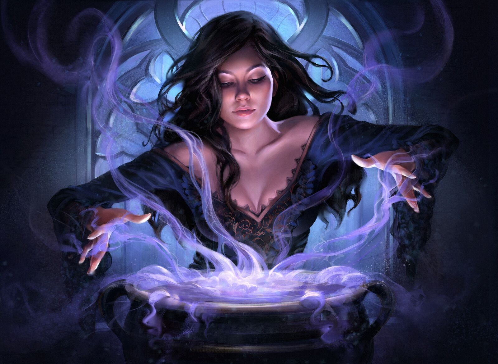
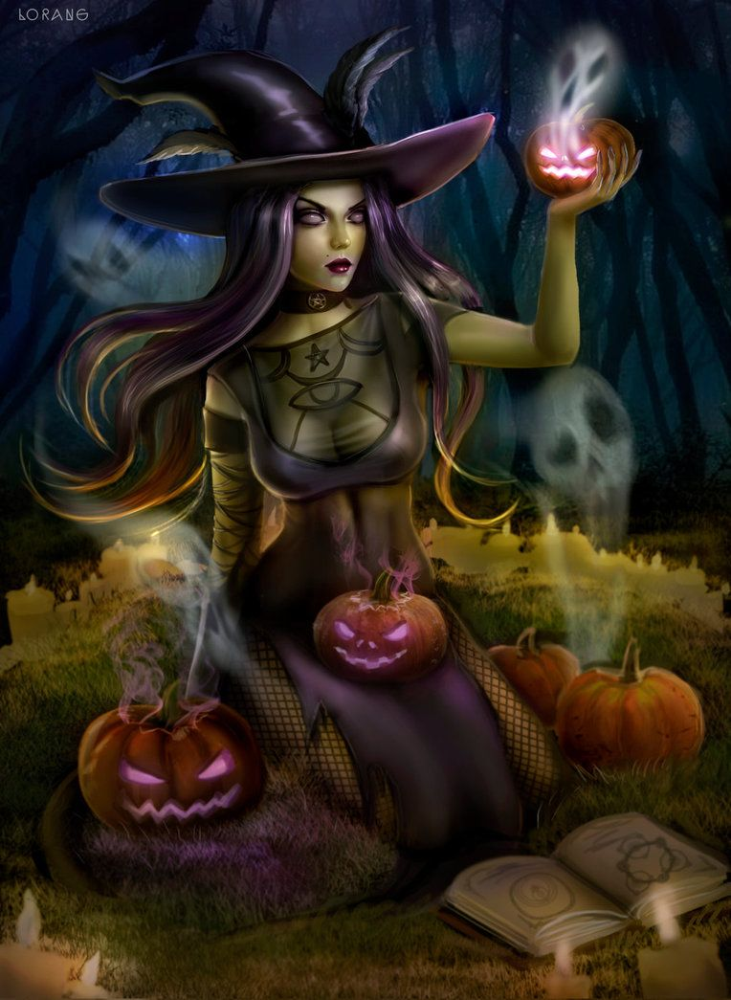
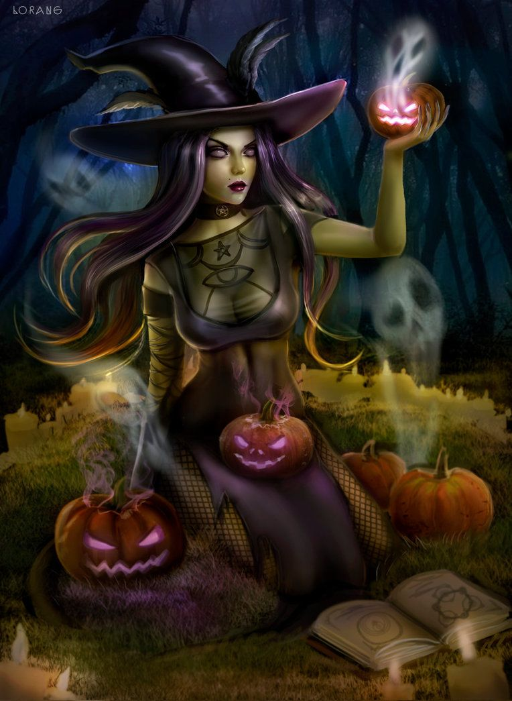
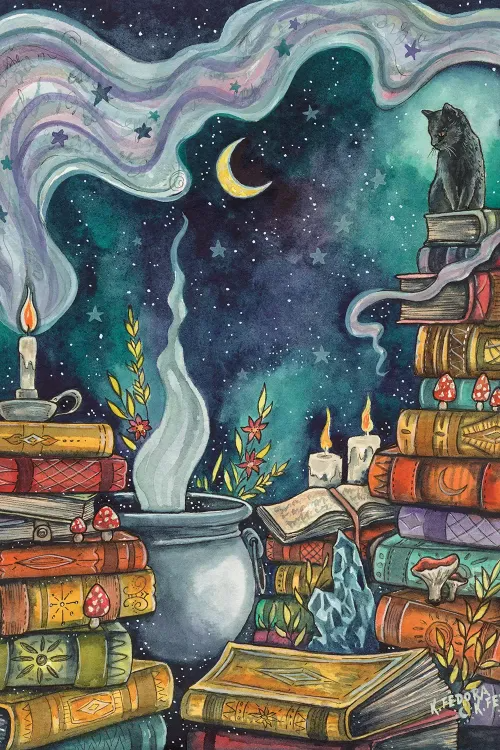
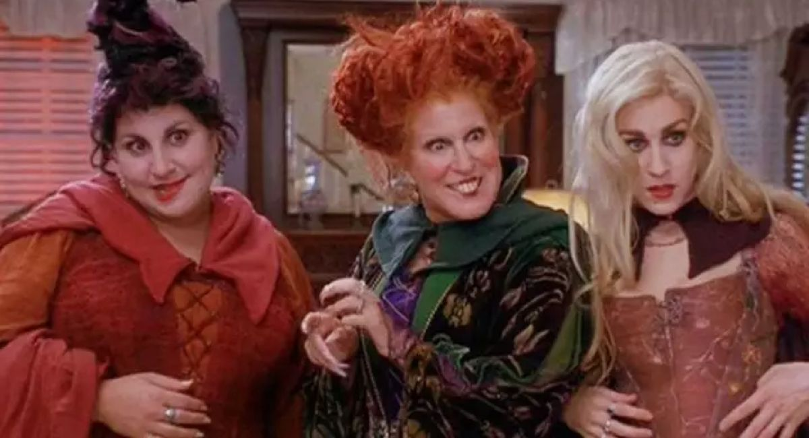

Want to know some more witchy know-how youve come to the right place! learn some basic information about the hostorically favored topic of witches!
First you have to classify what is a witch?
What does a witch wear? Robes, A hoodie, pointy hat or a crown? All of these are right. A classic witch generally has the attire of a robe, a cloak, gloves, or a dress accompanied with a pointy tall hat. They can carry along with them a staff, a broom, or a spell book as a spell casting accessory to bring together the witchy look. Generally the colors of thier attire will consist of black, all dark colors, red and orange. On thier clothing you can find themes of crystals, skulls, satanic like symbols, or astronomy symbols.
 

What does a witch own? Witches can be classified by some of the things they own. For their spell casting abilities, they are most known for having a staff or spell book so they can perform their spells. They also are known to own crystals and a collection of ingredients to give them the ability to make potions. These ingredients are known to be in jars commonly that consists of anything from something harmless like mushrooms and herbs or something freaky like eyeballs or frog legs. When making potions witches are known to have a fireplace and a cauldron to put all their ingredients into. Some of the more modern tales of witches will also own science equipment and call the potion making process alchemy. Witches are also known to have a companion on their side called a familiar. Witches are also known to have candles, wither it’s as a choice of keeping the room lightly lite or used to help them communicate with the afterworld, witches are commonly seen with candles within their homes. Witches are also known to keep around satanic like items like chalk or goats’ blood. Having such items allow those certain witches to summon ghosts, demons, or communicate to the devil himself.
The classic tale that consists of witches had to start from somewhere right? Where did tales of magic, black cats, and witches come from?
Stories of witches don’t have a clear beginning. Tales of witches go so far back they go are cautioned in the bible and even told before the bible. Witches are a figure that practice questionable ways and said to worship the devil or evil figures. Throughout history witches are generally seen more evil than good. It is mostly perceived that a witch is always a woman however men have been charged and killed for practicing witchcraft. Majority of the charges however are typically women.
Witches have faced trails for useing witchcraft. Throughout the years many women and men have been brought to justice. Not all trails resulted in deaths. Here are some of histories most significant trails. English Heritage claims nine million witches died in the years of the witch persecutions. About 30,000–60,000 people were executed in the whole of the main era of witchcraft persecutions, from the 1427–36 witch-hunts in Savoy (in the western Alps) to the execution of Anna Goldi in the Swiss canton of Glarus in 1782. These figures include estimates for cases where no records exist.
As witch hysteria decreased in Europe, it grew in the New World, which was reeling from wars between the French and British, a smallpox epidemic and the ongoing fear of attacks from neighboring native American tribes. The tense atmosphere was ripe for finding scapegoats. Probably the best-known witch trials took place in Salem, Massachusetts in 1692.
The Salem witch trials began when 9-year-old Elizabeth Parris and 11-year-old Abigail Williams began suffering from fits, body contortions and uncontrolled screaming (today, it is believed that they were poisoned by a fungus that caused spasms and delusions). As more young women began to exhibit symptoms, mass hysteria ensued, and three women were accused of witchcraft: Sarah Good, Sarah Osborn and Tituba, an enslaved woman owned by Parris’s father. Tituba confessed to being a witch and began accusing others of using black magic. On June 10, Bridget Bishop became the first accused witch to be put to death during the Salem Witch Trials when she was hanged at the Salem gallows. Ultimately, around 150 people were accused and 18 were put to death. Women weren’t the only victims of the Salem Witch Trials; six men were also convicted and executed.
Massachusetts wasn’t the first of the 13 colonies to obsess about witches, though. In Windsor, Connecticut in 1647, Alse Young was the first person in America executed for witchcraft. Before Connecticut’s final witch trial took place in 1697, forty-six people were accused of witchcraft in that state and 11 were put to death for the crime.
In Virginia, people were less frantic about witches. In fact, in Lower Norfolk County in 1655, a law was passed making it a crime to falsely accuse someone of witchcraft. Still, witchcraft was a concern. About two-dozen witch trials (mostly of women) took place in Virginia between 1626 and 1730. None of the accused were executed.
One of the first classical witches was Medea from Greek mythology; a sorceress who was represented as dangerous, powerful, unpredictable and untrustworthy. This perhaps paved the road for future representations of Witches, as a the key canonical representation of the Witch is that of the three ‘Wayward’ Sisters from Shakespeare’s Macbeth; three powerful, dangerous and untrustworthy matriarchs who set off the course of events throughout the play with their prophecy. In doing so, they cause a spiral of events leading to multiple deaths throughout the play.
Throughout early literary history, witches were often seen in one certain light; ugly, deformed and evil. From Hecate to The Weird Sisters, these fictional matriarchs had always been viewed in this particular manner. This was highly influenced by the real treatment of those suspected to study or perform witchcraft; from the Fifteenth to Eighteenth Century, Witch Trials occurred consisting of drowning, burning or hanging those suspected of sorcery and witchcraft. The famous Salem Witch Trials which resulted in the death of twenty people influenced Arthur Millar’s The Crucible, which could be argued to have brought light to the popularity of Witches in popular culture.
However, throughout history the representation of witches has changed, with their image becoming somewhat more glamorous and their demeanour seemingly shifted. Frank L. Baum’s The Wonderful Wizard of Oz (1990) is a great example of this, the four Witches each being depicted differently. The Wicked Witch of the West and the Good Witch of the North contrast greatly in both looks and personality. Whilst the Wicked Witch of the West has a more conventional depiction with her green skin and dark castle, the Good Witch of the North is depicted as beautiful and kind. The latter description has become more and more incorporated into modern culture as the shift moved from fear of the unknown and magic to that of fascination.
With the Witch Hunts coming to a close in the late Eighteenth Century, the fear of these beings began to diminish and therefore became more and more popularised in society. An example of this is an extremely mainstream, still infinitely popular book series; Harry Potter. J.K. Rowling created a vast array of different Witches (and Wizards) throughout this book series, differing between old, young, ugly, beautiful, bad and good. However, certain clichés still remain prevalent in Rowling’s writing. For instance, Bellatrix Lestrange is depicted as looking gaunt, with dark hair and a strong jaw as she is one of the ‘Wicked’ Witches within the novels. In contrast, Molly Weasley, an infinitely ‘Good’ Witch, is described as small and plump, not to mention generally far softer and kinder than Bellatrix.
It comes to mind the scene from the film Hocus Pocus where the three Sanderson sisters discover how their witchcraft has become somewhat of a mockery in modern society, particularly on the infamous holiday All Hallows’ Eve or these days, Halloween. The shift in attitude across culture and the literary sphere has been dramatic over the past few centuries; whether this is good or bad is still questionable.
Witches in the modern day have become a mixture of modern and old culture. You can have a witch that has warts, evil and scary to having a good witch and even witch schools. Witches are now very excepted in today's modern society and the modern art shows how accepted they are now.